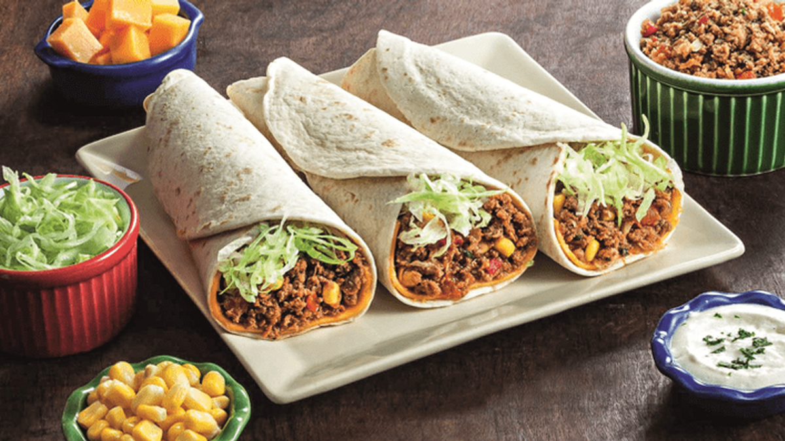

Informações

| Capital | Lingua Oficial | Governo | Presidente | Independência |
|---|---|---|---|---|
| Cidade do México | Espanhol | República federal presidencialista | Andrés Manuel López Obrador | 16 de setembro de 1810 |
| Área | População | PIB | Moeda | Fuso Horário |
| 1 958 201 km² | 126 014 024 hab | US$ 1 250 trilhão | Peso Mexicano | (UTC-5 a -8) |
Culinária
Conhecer a culinária mexicana é um excelente motivo para viajar até o México. Afinal, além de abrigar belíssimas paisagens naturais e uma cultura rica em história, o país tem um cardápio que faz qualquer um se apaixonar.
A gastronomia mexicana se tornou o que é atualmente devido às práticas culturais dos povos pré-colombianos, em especial os astecas. Com o tempo, eles também adquiriram certos costumes dos colonizadores espanhóis, no século XVI, em especial com a utilização de especiarias. Quando os colonizadores chegaram na conhecida Cidade do México, constataram que os povos consumiam muitos pratos compostos de milho (a tortilla com feijão e ervas). Com o tempo, eles inseriram outros alimentos.
Guacamole
O guacamole é uma iguaria típica da culinária do México, servida com uma grande variedade de pratos e geralmente acompanhada com pico-de-gallo e nata azeda.
É basicamente um puré de abacate bem temperado, que funciona como um complemento da salada, tendo sido exportado para todas as partes do mundo onde existe comida mexicana, mesmo que esta seja alterada de acordo com os gostos locais.
INGREDIENTES
- 1 abacate brasileiro médio
- 1 cebola pequena
- 1 maço de coentro
- suco de 1 limão grande
- Sal
- 1 tomate grande sem sementes
- 2 dentes de alho bem socados
- 1 pimenta malagueta sem sementes
- azeite extra virgem
Cochinita pibil

Cochinita pibil é um prato típico da culinária de Yucatán (México), e consiste em carne de porco marinada com achiote, laranja amarga e vários condimentos, cozinhada no forno, dentro de folhas de banana-da-terra.
Tradicionalmente, cozinhava-se um porco inteiro (pequeno, de onde o nome “cochinita”, sem vísceras), num forno improvisado num buraco na terra – o “pibil”.
INGREDIENTES
- 2,5 kg de cabeça de lombo de porco cortada em cubos grandes
- 150 g de pasta de achiote
- 120 ml de sumo de laranja
- 120 ml de sumo de limão
- 120 ml de vinagre de vinho branco
- 2 colheres de sopa de banha de porco (opcional, 50 g)
- 1 colher de sopa de pimenta preta moída (12 g)
- 8 dentes de alho descascados
- 1/2 colher de sopa de sal (7 g)
Burrito
Burrito é um prato tradicional da culinária mexicana e da culinária Tex-Mex consistindo em uma tortilla de farinha geralmente recheada de diversos ingredientes, a maior parte das variantes utiliza feijão e carnes (bovina, suína ou frango) com acompanhamentos.
Burritos percherones costumam ser maiores e os recheios incluem ingredientes como arroz, feijão, alface, tomates, salsa, guacamole, queijo, creme e vegetais, o que se distingue da variante mexicana do prato geralmente preenchida com carne e feijão.
INGREDIENTES
Massa:
- 1/2 xícara (chá) de farinha de trigo
- 1 colher (sopa) de margarina
- Água
- 1 xícara (chá) de farinha de milho fina
- Sal
Pozole
O pozole é uma receita tradicional do México feita à base de grãos de milho e carne. Dependendo da região, a carne usada é de frango ou de porco e, na receita que vamos propor de seguida, a carne que vamos usar pode ser uma ou outra, dependendo do seu gosto e preferência.
Este prato é um caldo muito fácil de preparar e que pode levar chili para dar um toque mais picante e conseguir assim uma receita 100% mexicana. Neste artigo de umComo vamos explicar como fazer pozole mexicano em alguns passos simples, que ajudarão você a criar um prato de comer e chorar por mais.
INGREDIENTES
- 1 quilo de carne de porco ou frango
- 1 cebola grande
- 3 pimentas do tipo chilis secas
- 2 dentes de alho
- ½ colher de chá de cominho em pó
- 800 g de milho preparado para pozole
- 8 rabanetes
- ½ quilo de couve branca
- 10 limões
- ¼ xícara de orégano desidratado
- Sal
- Chili esmagado ou em pó (opcional)
Pontos Turísticos
Teotihuacan
As pirâmides sempre foram estruturas fascinantes e misteriosas. Embora as de Gizé, no Egito, sejam as maiores de todas, as pirâmides localizadas em Teotihuacan também são incríveis. Distante 48 quilômetros da Cidade do México, o local tem vestígios arqueológicos maravilhosos. Isso porque a civilização Teotihuacan dominava a região há cerca de 2.100 anos. A Pirâmide do Sol, a Pirâmide da Lua e a Avenida dos Mortos são os principais pontos turísticos de Teotihuacan, mas muitas informações históricas e tecnologias antigas ainda estão sendo descobertas nesta cidade.
Cancún
A cidade de Cancún, com incríveis praias paradisíacas no mar do Caribe! Um dos principais pontos turísticos do México, Cancún fica perto de Tulum e é muito procurada pelos visitantes norte-americanos no verão!
Palácio de Bellas Artes
O Palácio de Bellas Artes está entre os mais exuberantes edifícios da Cidade do México. E o lugar é para ser admirado tanto por fora – pela lindíssima fachada e jardins – quanto por dentro, onde escadarias emolduram os painéis que decoram os corredores, com trabalhos originais de Diego Rivera, José Clemente Orozco, Rufino Tamayo e outros. O Palácio de Bellas Artes conta com variada agenda de espetáculos e exposições, com excelentes apresentações de orquestras, teatro, dança e outros.
Castelo de Chapultepec
O Castelo de Chapultepec é um palácio situado na Cidade do México, no México. Trata-se duma residência localizada no alto da colina de Chapultepec, no centro do Bosque de Chapultepec, a uma altura de 2.325 metros acima do nível do mar, integrando o Parque de Chapultepec.
Sítio Arqueológo de Tulum
Tulum é um sítio arqueológico correspondente a uma antiga cidade muralhada maia que foi um dos principais portos da cidade de Cobá. Situa-se no município homónimo, junto à cidade moderna homónima, na costa caribenha do sudeste do México, no estado de Quintana Roo, numa região conhecida como Riviera Maya.
Chichén Itzá
Chichén Itzá é um complexo mundialmente conhecido de ruínas maias na Península de Iucatão, no México. A enorme pirâmide com degraus é conhecida como El Castillo e domina a cidade antiga de 6,5 quilómetros quadrados, que prosperou de 600 d.C. até ao século XIII. As esculturas gráficas de pedra sobreviveram nas estruturas, como no campo de jogo de bola, no Templo dos Guerreiros e na Parede das Caveiras. Os espetáculos de som e luz à noite iluminam a geometria sofisticada dos edifícios.
Contato
Para mais informações sobre a pagina e o desenvolvedor, preencha os campos abaixo e envie sua menssagem.
Sua menssagem será importante para nós.
Social Profiles
bradoke@gmail.com
Telefone
+55 19 99829 0433